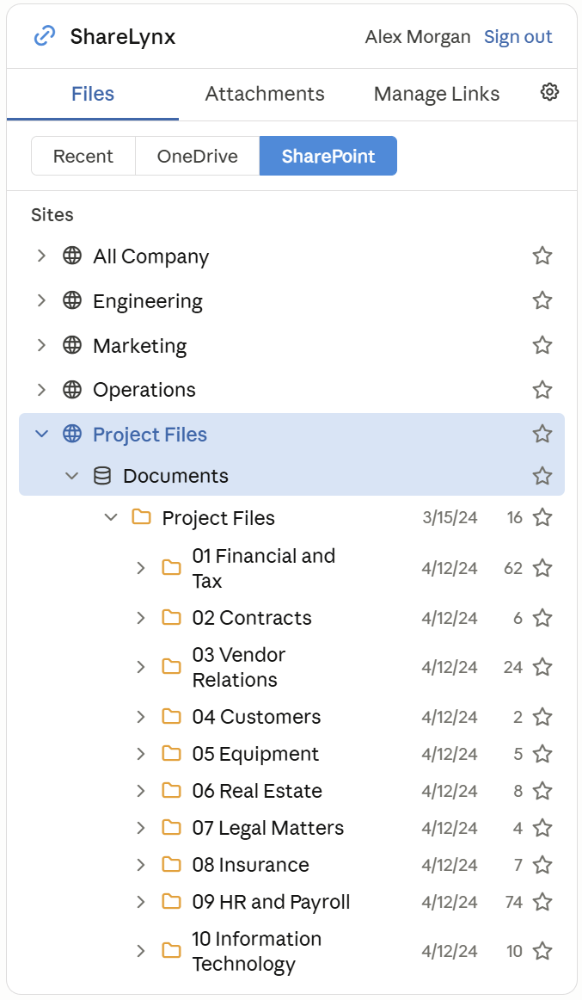
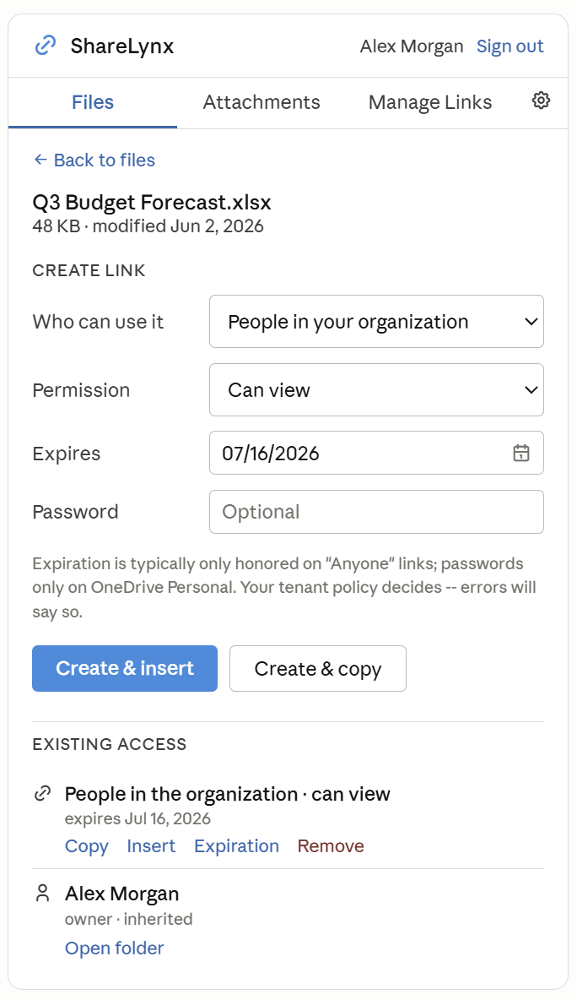
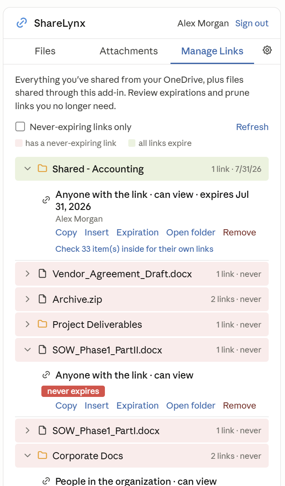

ShareLynx
OneDrive and SharePoint sharing, built into Outlook.
- Browse OneDrive and SharePoint files without leaving Outlook
- Create sharing links with audience, permission, and expiration controls
- Manage and revoke every link you've shared
- Convert oversized attachments to sharing links on the fly
- Tenant-wide policy via a SharePoint list, no code changes needed



View on GitHub
Setup guide
Deploy to your tenant
- Fork or clone the repo
- Run
.\setup\ShareLynx_Entra_Setup.ps1 -MultiTenant and enter your hosting URL
- Host the files (GitHub Pages, Azure Static Web Apps, any HTTPS host)
- Grant admin consent and upload
manifest.xml in M365 admin center